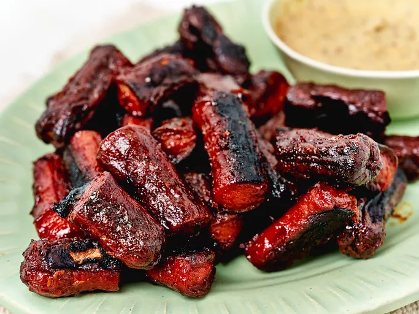

Home
Hot Dog Burnt Ends recipe

Description
These charred hot dog burnt ends are crispy, juicy, and simply delicious. Serve with mustard for dipping.
Ingredients
- 2 packages beef hot dogs
- 1 cup yellow mustard
- 2 tablespoons brown sugar
- 1 teaspoon cayenne pepper
- 1 teaspoon onion powder
- 1/4 teaspoon freshly ground black pepper
- 1 cup BBQ sauce
Steps
- Preheat the oven to 350 degrees F (175 degrees C). Line a baking sheet with aluminum foil
- Combine hot dogs, mustard, brown sugar, cayenne pepper, onion powder, and black pepper in a large resealable bag. Shake bag so hot dogs are well coated with mustard and spice mixture. Spread out seasoned hot dogs onto the prepared baking sheet.
- Bake in the preheated oven for 1 hour.
- Remove hot dogs and cut them into thirds. Increase oven temperature to 400 degrees F (200 degrees C).
- Combine hot dog pieces and BBQ sauce in a bowl and mix until hot dogs are completely coated with sauce. Return to the baking sheet.
- Bake in the preheated oven for an additional 10 minutes.